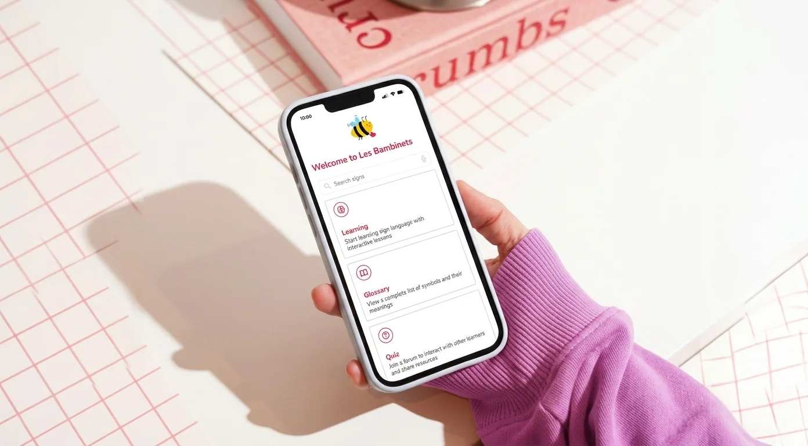
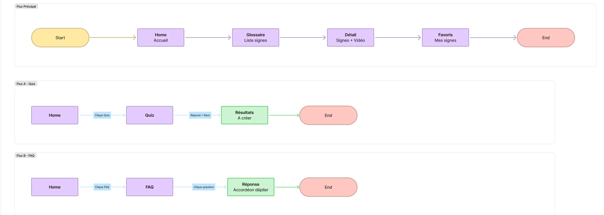
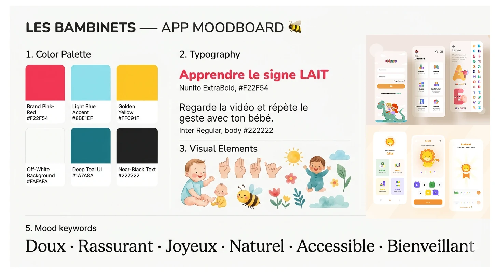
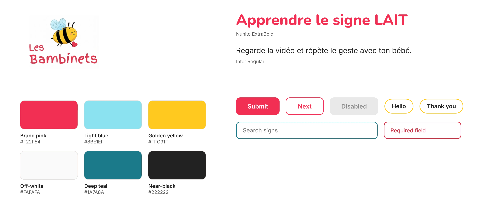
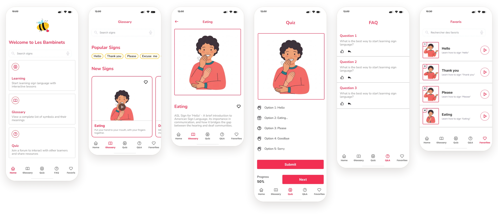
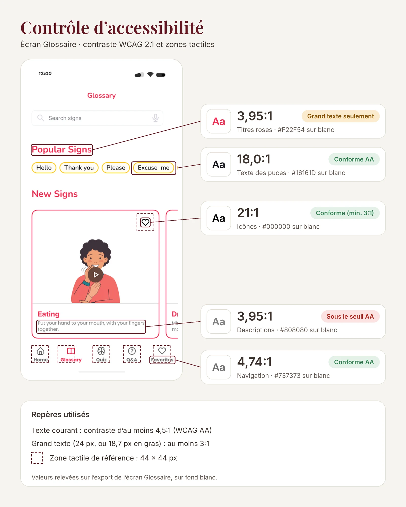

Les bambinets
Visual identity, accessible design system and prototype
A visual identity, an accessible design system and a clickable prototype for a sign language app for young children, built on top of existing wireframes.

Context and challenge
Les Bambinets is an innovative nursery that wants a mobile app to help parents and early-childhood professionals communicate with toddlers through sign language. The client had no visual identity yet, only a logo.
Their wish list: a glossary of about twenty signs, sorted alphabetically and by category (essential, emotions, leisure, nature), a favorites feature with a heart icon, videos to show the gestures, micro-quizzes, and a clear FAQ for adults.
A User Researcher colleague had already produced wireframes and tested them. My mission: use them as a base to define the look and feel, build the design system, and go all the way to an interactive prototype.
A look that is soft and warm for toddlers, clear and readable for parents and professionals, and a design system that keeps every screen consistent and accessible.
Home, glossary, details, quiz, FAQ, favorites: each one analyzed, with the open questions listed before any design.
One main path and five secondary ones (quiz, FAQ, favorites, filtering, empty state), all clickable.
Contrast checked at AA level, touch targets of at least 44 by 44 px, visible keyboard focus.
Tested wireframes are a base, not a verdict
I went through the six wireframes one by one: role of the screen, elements, strengths, and what was unclear. I also listed the components that come back on several screens, since they would become the core of the design system: tab bar, primary button, search bar, sign card, heart icon, quiz answer button, video player, filter chip, FAQ item.
Some grey areas needed a decision before drawing anything:
- The quiz offers five answers, too many for a mobile screen: I planned three or four, plus a results screen that did not exist.
- The heart (favorite) was missing on glossary cards and on the details page, exactly where people want to save a sign.
- The FAQ icons were not standard: I chose an accordion and clarified the actions.
- Favorites had no empty state, so I added one with an invitation to explore the signs.
Every path drawn before any screen
I built the user flow in FigJam: one main path (home, glossary, sign details, favorites) and five secondary flows. Each screen is a block, each arrow carries the user action, and no path is cut or forgotten.
- A, Quiz: watch the video, pick an answer, submit, see the score, start again.
- B, FAQ: open a question, the accordion unfolds, go back.
- C, Favorite: tap the heart, it fills, the sign joins the favorites.
- D, Filter: choose a category chip, the list narrows, open a sign.
- E, Empty favorites: illustration and message, then a way back to the glossary.

User flow in FigJam. Yellow for start and end, purple for screens, blue for actions.
A soft look for toddlers, a clear one for adults
The moodboard is built on the client’s only asset, the bee and coral logo. It is organized in sections (colors, typography, UI, illustrations, iconography), and each inspiration comes with a comment explaining why it serves toddlers, parents or professionals.
- Palette: primary, secondary, neutral and accent colors, all checked at AA contrast with a plugin.
- Typography: Nunito for titles, Inter for text, with body text of at least 16 px for mobile.
- Illustrations: flat and pastel, with recommended ratios.
- Icons: a single family, one stroke weight, rounded.

Moodboard. Every inspiration is commented, so the client can validate the direction before anything is built.
A design system where every state is documented
The style guide fixes the rules: colors with HEX codes, text styles from H1 to Caption, icons and illustrations. The design system then turns them into reusable components, starting from shadcn/ui and customized with the Bambinets identity.
- Buttons: default, hover, pressed, disabled.
- Inputs: default, focus, error.
- Sign card: empty heart or filled heart.
- Navigation: active and inactive tabs.
Components are named consistently (for example Button/Primary/Large), and the unclear usages are documented directly in the Figma file, such as when to use a primary or a secondary button.

Style guide and components, with variants and states.
Six flows you can click through
The high-fidelity screens are linked into a Figma prototype that covers every flow of the user flow. The interactions that matter are simulated: the heart fills, quiz answers get selected, inputs show focus and error states, and the quiz gives green or red feedback. Simple animations keep the navigation smooth.
Dynamic zones are annotated (video playing on tap, quiz feedback, validation messages), and I replayed every flow to make sure no link was broken.

The six screens of the prototype: home, glossary, sign details, quiz, FAQ and favorites.
Accessibility checks on every screen
AA level. Key color pairs checked with Stark, on the palette and on each screen.
44 by 44 px. Minimum size for every tappable element, for small hands and hurried parents.
Visible focus. Focus is visible on all interactive elements.
What was hardest: checking contrast and touch targets screen by screen. It is the point I want to go deeper on.

The Glossary screen checked for contrast and touch targets. Descriptions in grey sit under the AA threshold, which is the kind of finding this check is for.
What I take away
Tested wireframes still hide decisions: list the grey areas before designing.
A moodboard with a comment on each inspiration keeps the visual choices justified.
Accessibility checks belong in the components, so every screen inherits them.